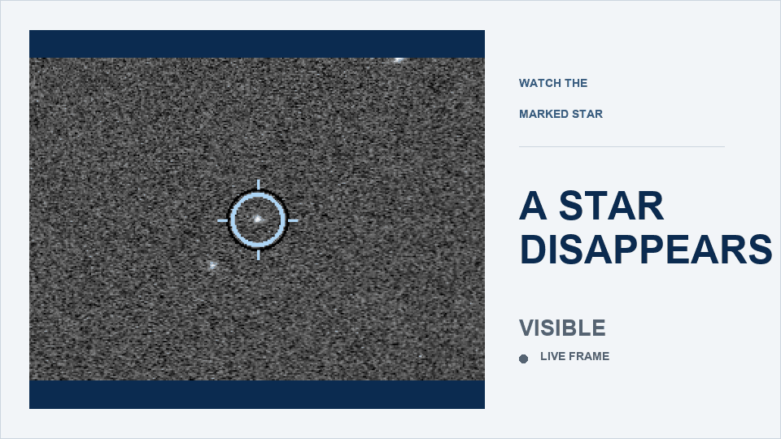

12-inch aperture
UNIMELB BASED
A star disappears for seconds. We turn its shadow into a measurement of an asteroid.

The measurement
Group equipment
You do not need to own a telescope.

Equipment images: Meade 12″ LX200 ACF ↗ · Celestron ↗
Equipment and observing setup
Wider collaboration
High-priority events can create opportunities to collaborate with larger observing teams, including NASA- and ESA-connected campaigns.
The trip to Cobar, New South Wales, for the Kallichore occultation campaign was funded by ESA.
What a field campaign involvesPeople
Alex is a first-year PhD student studying the cosmic microwave background and the early Universe. What draws Alex to asteroid occultations is the full observing process: setting up, waiting, and seeing a real event unfold in the sky.
Daria Li is a Melbourne-based therapist and researcher interested in what becomes visible through darkness, distance and obscuration. Drawing connections between inner experience and the night sky, she is curious about how encounters with astronomical scale can shift our sense of self, relationship and belonging.
Stephen Catsamas is a PhD student in the School of Physics at the University of Melbourne. His research explores new capabilities for monitoring satellites in Earth orbit through first-principles physical modelling and analysis.
Tools & organisations
Our observing program builds on community-maintained predictions, software, reporting standards and volunteer expertise. We gratefully acknowledge the people and organisations behind the tools we use.
Our regional community for event predictions, observing guidance, reporting and shared results across Australia, New Zealand and the South Pacific.
Visit TTOAA global home for occultation observing, technical guidance, data reporting and the publication of results.
Explore IOTAThe planning platform we use to find upcoming events, review prediction paths and coordinate observing stations.
Open OWCJoin the group
No telescope. No prior experience. Start with us.
We will help you learn setup, analysis and reporting. Expect a steep but fruitful learning curve.